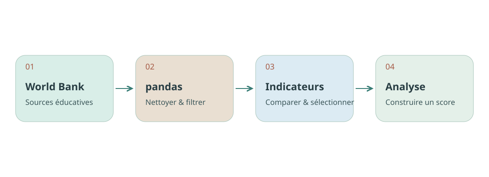

Schéma explicatif du périmètre décrit ; les environnements sont précisés dans l’étude.
Le besoin et ma contribution
Comparer des pays sur des données incomplètes et hétérogènes. J’ai exploré les sources, traité leur structure, sélectionné les indicateurs et explicité une méthode de priorisation.
Préparer une comparaison cohérente
La préparation distingue pays et agrégats régionaux, étudie les valeurs manquantes et sélectionne les périodes disponibles. Les corrélations aident à limiter la redondance entre indicateurs.
Rendre les hypothèses visibles
Le score pondéré traduit un besoin éducatif selon des critères explicites. Les choix de poids, le sens des indicateurs et le traitement des absences influencent le classement et doivent rester lisibles.
Une synthèse documentée
La présentation finale combine statistiques descriptives, visualisations et comparaison multicritère. La valeur du travail réside dans la préparation et l’explication des choix.
Un score de besoin
Ce score n’établit pas à lui seul l’attractivité commerciale d’un marché. Une décision d’implantation demanderait des données complémentaires et une analyse de sensibilité des pondérations.
Code et éléments de preuve
Les extraits et résultats ci-dessous proviennent des livrables du projet, consultés le 16 novembre 2026. Les traitements n’ont pas été réexécutés pour cette présentation.